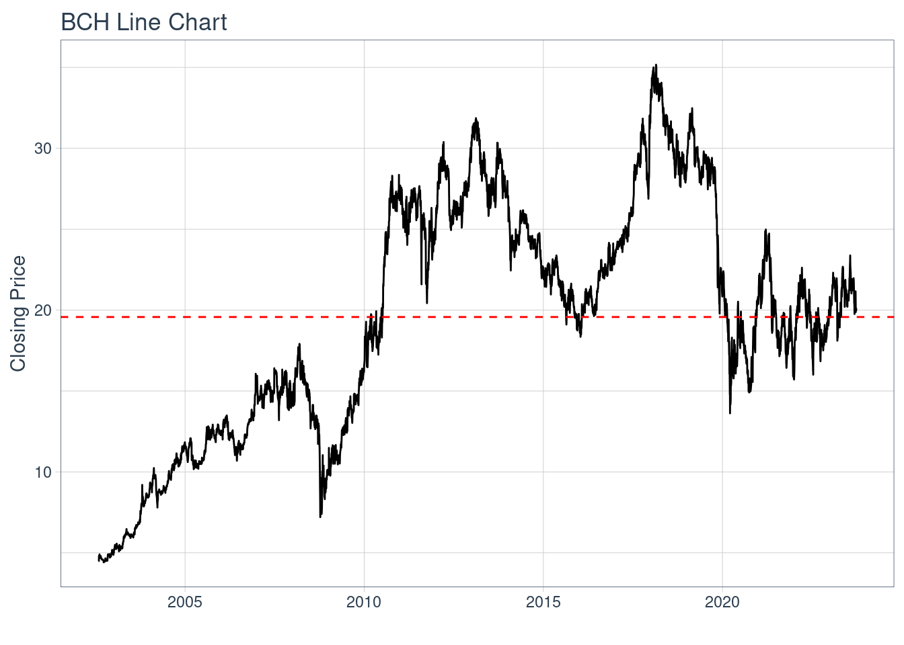
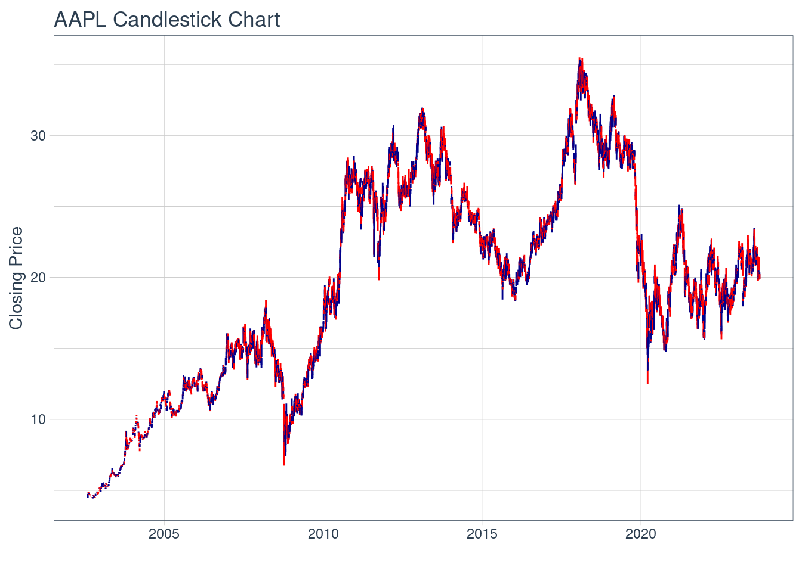
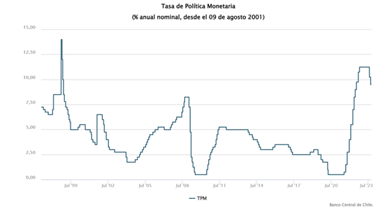
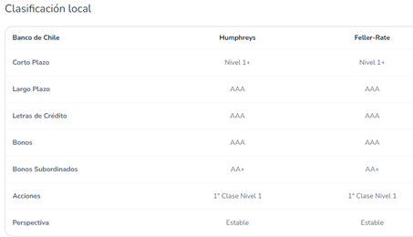
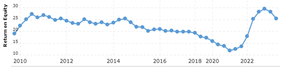
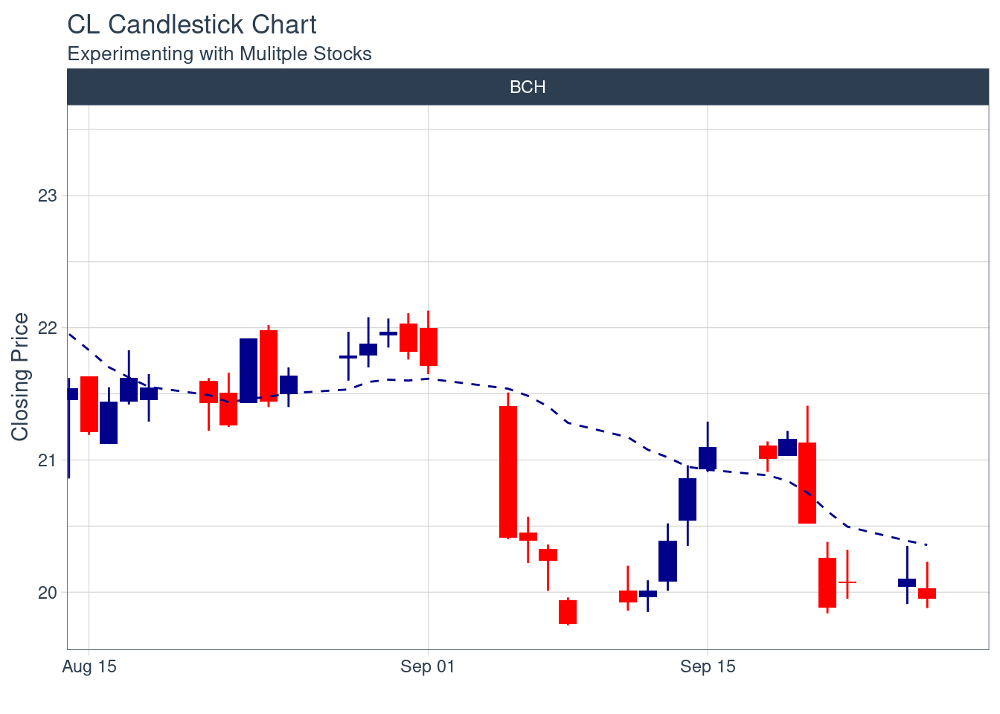
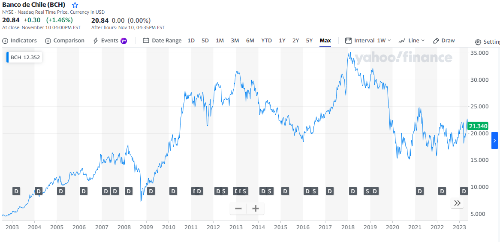
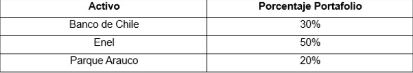
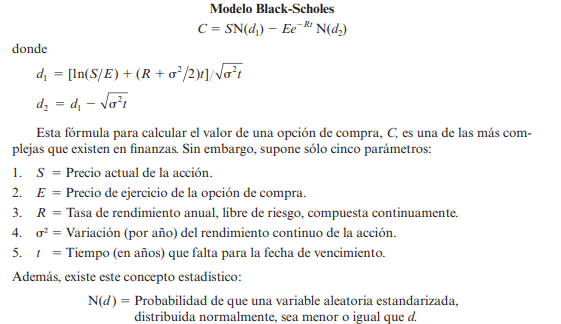

Plantilla Proyecto Gestión Financiera
Descripción Activo y Contexto (Hito 1)
Fecha de entrega: Jueves 28 de Septiembre 23:59.
Definición
El sector por estudiar en este caso corresponde a la banca. Los bancos son instituciones financieras, las cuales reciben y administran el dinero que empresas y personas depositan. Con el dinero depositado, los bancos otorgan distintos prestamos a personas y empresas que requieran de un financiamiento para realizar gastos hipotecarios, de consumo o comerciales. Junto con esto, los bancos también ofrecen otros servicios como la realización de transacciones, consultor financiero, cambio de monedas extranjeras, mantenciones de cajas de seguridad, entre otros. El balance de los bancos comerciales está compuesto principalmente por préstamos en sus activos y por depósitos en los pasivos. El mayor porcentaje de bancos a lo largo del mundo, se rigen por los acuerdos de Basilea, estos acuerdos representan regulaciones bancarias, las cuales son utilizadas para reforzar el sistema bancario y para estar preparados frente a algún acontecimiento negativo imprevisto.
Los bancos obtienen sus ingresos principalmente a través del spread, esto es, la diferencia entre el cobro de tasas de interés a clientes quienes piden préstamos y el interés que pagan a quienes depositan su dinero en la entidad bancaria.
El componente del IPSA que se escogió en esta oportunidad corresponde al asociado al Banco de Chile, institución fundada el 28 de octubre de 1893 que cuenta con gran cantidad de sucursales por todo el pais y ha sido un elemento fundamental para el desarrollo económico del país.
El activo BCH tiene un valor promedio para el intervalo igual a 20
BCH %>%
ggplot(aes(x = date, y = close)) +
geom_candlestick(aes(open = open, high = high, low = low, close = close)) +
labs(title = "AAPL Candlestick Chart", y = "Closing Price", x = "") +
theme_tq()
Motivación
El interés del sector bancario se debe a su dominancia en la última década en los activos del mercado financiero chileno. Los últimos dos años, han representado un periodo rentable para el sector bancario nacional producto de una mayor eficiencia, costes de riesgo un tanto más bajo, márgenes más altos y una tasa impositiva reducida impulsada por una inflación mayor de la esperada.
Y la elección especifica del Banco de Chile, se debe a que ha sido el banco más rentable de los últimos años y a su compromiso con una cultura sostenible, lo que implica la incorporación de los principios Ambientales, Sociales y de Gobernanza (ASG) en sus operaciones. Destacando, por ejemplo, la reducción del consumo de papel (-57% al año 2022), reducción a la mitad su huella de carbono entre 2018 y 2022, consumo eléctrico se abastece en su totalidad mediante fuentes de energía renovable, y además este año relanzaron su programa llamado Compromiso Azul para Chile.
Contexto
La Tasa de Política Monetaria, o también conocida como TPM, corresponde a la tasa que el Banco Central utiliza para prestarle dinero a los bancos, esto termina afectando, por ende, en todo el sistema financiero. La TPM la define el Consejo del Banco Central y permite frenar o volver a activar la actividad económica para así cumplir con las metas de inflación.
El siguiente gráfico nos muestra la evolución de la Tasa de Política Monetaria desde el año 1997 hasta hoy. Podemos observar que hoy en día la TPM se encuentra en uno de sus puntos más altos a lo largo de los años mencionados. Esta TPM alta implica que personas y empresas decidan optar por no endeudarse debido al alto costo que esto conllevaría.

Otra variable que es importante tener en consideración en el sector bancario, tiene que ver con la clasificación de riesgo de las entidades bancarias. La clasificación de riesgo indica la capacidad que tiene la empresa para cumplir con sus compromisos/obligaciones financieras, por lo que mientras mejor capacidad tenga, mayor será la captación posibles clientes.
El Banco de Chile cuenta con la siguiente clasificación de riesgo a nivel local. Donde la clasificación AAA significa la máxima solvencia o alta capacidad de cumplimiento.

Finalmente, tenemos el Return on Equity (ROE), que nos permite medir la rentabilidad de una empresa.
La siguiente imagen muestra la evolución del ROE para el Banco de Chile desde el 2010 hasta hoy.


- ¿Para que sirven las siguientes líneas en los bloques de código?
#| warning: false
#| echo: falseAnálisis de Largo Plazo
Caracterización deuda (Aplicación cap. 15)
El capital accionario del Banco de Chile contiene un total de 12.138.504.795 acciones, las cuales están divididas en 4 series distintas, estas son: Serie A, Serie B, Serie D y Serie E.
-La Serie A corresponden a acciones remanentes de las originales, estas no tienen derecho a dividendos, sin embargo, si cuentan con el derecho a voz y voto en la junta de accionista del banco. Se cuenta con un total de 567.712.826 acciones de este tipo, equivalente a un 4,7% del capital accionario.
-La Serie B corresponden a acciones preferentes, es decir, estas acciones tienen derecho a dividendos. Se tiene un total de 11.000.000.000 de este tipo de acciones, las cuales representan un 90,6% del capital accionario.
-La Serie D son también acciones preferentes, con un total de 429.418.369 acciones de este tipo, representando un 3,5% del capital accionario.
-La Serie E surgieron de la división de las acciones Serie C, y corresponden a acciones preferentes. El total de acciones es de 141.373.600, equivalentes a un 1,2% del capital accionario.
Bonos: El Banco de Chile, ha realizado en varias ocasiones diversas colocaciones de bonos, tanto en el mercado local como en el extranjero. Un ejemplo de esto, es cuando el 8 de junio de 2023, realizaron una colocación en el mercado extranjero por la suma de un monto nominal de JPY 6.300.000.000, de fecha vencimiento el 16 de junio de 2025 y tasa de colocación de un 0,75%.
Caracterización de emisiones históricas (Aplicación cap. 20)
El día 22 de marzo de 2018 en la Junta Extraordinaria de Accionistas se acordó la emisión de acciones liberadas de pago, en la cual se pactó aumentar el capital en $147.432.502.459 CLP por medio de la emisión de 1.572.948.922 acciones liberadas de pago. El 9 de julio de 2018 fue inscrita en el Registro de Valores de la Superintendencia de Bancos e Instituciones Financieras la emisión de las acciones. Posteriormente el 12 de julio de 2018, el directorio llegó al acuerdo de dejar para el día 26 de julio de 2018 la emisión y distribución de las acciones. Serán capaces de recibir las acciones, accionistas que estén inscritos hasta el día 20 de julio de 2018 en el registro de accionistas de la sociedad.
Relación con activos derivados
Banco de Chile, realiza inversiones en distintos derivados como lo son los swaps de tasas de interés, opciones, forwards, entre otros.
En este caso, el activo derivado a evaluar corresponde a la opción del banco de chile en la bolsa de Nueva York. Una opción corresponde a un contrato que entrega el derecho a comprar o vender un activo a un precio fijo en una fecha o intervalo de tiempo. Las opciones son relevantes, ya que estas permiten, en este caso a los bancos, tomar decisiones estratégicas y gestionar riesgos.
A continuación, se muestra una evolución de la acción con dividendos y splits:

Aplicando el procedimiento de valoración mediante el uso del modelo Black-Scholes se llegó a que el precio de la opción del Banco de Chile arroja un valor de 1.3322140660129254 dólares.
Reporte grupal
El porcentaje del portafolio entregado para cada activo, se muestra en la siguiente tabla:

Se determinó que Enel Chile tendra un 50% de peso en el portafolio debido al pronostico de crecimiento que tendrá en el proximo año (65.80%). Además en los ultimos 2 años ha obtenido un retorno promedio de 37.5%, mayor que los activos elegidos en las otras industrias. Otro aspecto que nos hizo elegir un peso mayor que las otras compañia es su compromiso con el medio ambiente, aspecto que cada vez es mas valordo. Por otro lado, la empresa ha invertido fuertemente en nuevos proyectos que probablemente demuestren mayores retornos en el futuro.
Por otro lado, al Banco de Chile se le asignó un 30% de peso en el portafolio debido a su liderzago en la industria bancaria en terminos de rentabilidad y ha jugado un papel sumamente importante a lo largo de los años en la industria financiera. Junto a esto, la proyección del banco en terminos de crecimiento para los proximos años, es positiva y cercana a un 11.8%.
Finalmente, a Parque Arauco se le otorgó un 20% del portafolio debido a la diversificación del modelo de negocios que han implementado en los últimos años. El ingreso al negocio de los edificios multifamily podría ser una razón de gran crecimiento para la empresa en el futuro, debido a que actualmente ya operan dos edificios en Santiago, tienen proyectos que estarán operando en el corto plazo en Perú y Colombia, y tienen planes de seguir ampliando esta cantidad. Considerando la gran demanda de arriendo que existe hoy en día, la empresa podría verse muy beneficiada con la implementación de este nuevo negocio.
Aplicación Black-Scholes
El modelo Black-Scholes fue desarrollado por dos matematicos llamados Fisher Black y Myron Scholes. Black-Scholes, en un principio, fue utilizado para la valorizacion de opciones las cuales no repartían dividendos, es decir, calcular cual debería ser el precio adecuado para una opción financiera. Con el paso de los años, el calculo fue ampliado a todo tipo de opciones.
Este modelo ha sido considerado uno de los pilares fundamentales de la teoría financiera moderna, logrando en el año 1997 el premio Nobel de economía.
A continuación se presenta la formulación del modelo Black-Scholes.

En el codigo de python la letra E está representada por la letra K.
Modelo Adicional de valorizacion
Modelo de Regresión Monte Carlo: El modelo de Monte Carlo corresponde a un método flexible y sencillo que implica la simulación de múltiples escenarios (mientras más grande sea el número de simulaciones, mayor precisión tendrá la estimación del precio de la opción) con base en algún proceso estocástico del precio de un activo financiero.
La simulación encuentra varios valores de St y para cada uno de estos valores se calcula el pago de la opción, se estima un valor medio de esta variable y se trae a valor presente utilizando la tasa libre de riesgo en vez de la tasa de descuento. La estimación del precio de la opción, esta dada por la siguiente formula:

r corresponde a la tasa libre de riesgo.
T corresponde al tiempo hasta la expiración de la opción (en años).
Análisis de contraste de ambos modelos
Observando los resultados, tenemos que para el caso del modelo de Black-Scholes el precio de la opción arroja un valor de 1.3322140660129254 dolares, mientras que utilizando modelo de Monte Carlo el precio de la opción tiene un valor de 1.3355523220243686 dolares. Esta similitud en los resultados se debe primero porque ambos asumen que la distribución de probabilidad de los retornos corresponde a una distribución normal. Otro aspecto para tomar en cuenta es que se está analizando en este caso una opción para el corto plazo, donde Black-Scholes realiza buenas estimaciones en estos periodos de tiempo, mientras que Monte Carlo es utilizado mayormente para valorización de opciones más complejas y en situaciones más cercanas a la realidad (Black-Scholes asume ciertos supuestos, por ejemplo: no hay costes de transacciones o impuestos). Y, por último, tiene que ver con que se realizaron varias simulaciones en el método de Monte Carlo, por lo que el resultado tiende a ser más preciso, mientras que, si ponemos el número de simulaciones más bajo, obtenemos una mayor diferencia en los precios obtenidos.
Reporte Grupal: Caso Administración
- Caso Administración de Efectivo de Braam Industries de la página 874 del ROSS.

En base a lo calculado en el excel sobre el caso Administración de Efectivo de Braam Industries, teniendo en cuenta el activo de ENEL podemos concluir que la politica que debe adoptar la empresa corresponde a la opción 1 al ser la opción con el mayor VPN dentro de todas las alternativas posibles. Por otro lado, no es factible que la opción 3 tenga una tasa de incumplimiento y costos administrativos inferiores a la opción 2 por lo que esta afirmación es errónea.
Aprendizajes
Con la realización de este trabajo, se logró comprender los diferentes tipos de activos en los cuales puede incurrir, en este caso el sector bancario, especificamente el Banco de Chile, como los distintos tipos de acciones y las diferentes colocaciones de bonos. Además se analizó el proceso de una emisión de acción.
Por último, se analizaron los modelos de Black-Scholes y el modelo de regresión de Monte Carlo, para la valorización de opciones, logrando entender las similitudes y diferencias existentes entre ambos modelos.
Bibliográfia
-CMF, sf, Bancos. Available at: https://www.cmfchile.cl/educa/621/w3-propertyvalue-967.html
-CMF, 2020, Implementación de Basilea III en Chile: Evaluación de Cierre. Available at: https://www.cmfchile.cl/portal/principal/613/articles-46720_doc_pdf.pdf
-Banco de Chile, sf, Medioambiente. Available at: https://portales.bancochile.cl/nuestrobanco/es/nb/sostenibilidad/medioambiente
-Banco de Chile, sf, Clasifiación de riesgo. Available at: https://portales.bancochile.cl/nuestrobanco/es/investor-relations/inversionistas/clasificacion-de-riesgo
-Banco Central, sf, Polítia Monetaria. Available at: https://www.bcentral.cl/web/banco-central/areas/politica-monetaria#:~:text=%C2%BFQu%C3%A9%20es%20la%20tasa%20de,las%20tasas%20del%20sistema%20financiero
-Macrotrends, sf, BCH. Available at: https://www.macrotrends.net/stocks/charts/BCH/banco-de-chile/roe
-Banco de Chile, sf. Available at: https://portales.bancochile.cl/sm-chile
-Banco de Chile, 2023, Hechos Esenciales e Información de Interés. Available at:https://portales.bancochile.cl/uploads/000/052/030/cc545567-499f-4800-9f57-1aab62f70562/original/6K_08_06_2023_Colocaci_n_de_bonos_en_el_mercado_extranjero.pdf
-Banco de Chile, 2018, Hechos Esenciales e Información de Interés. Available at: https://portales.bancochile.cl/uploads/000/009/256/15d2a34c-24f1-444a-b4b0-1932f6c920ae/original/emision_acciones_liberadas_pago_esp.PDF
-Mercados en linea, sf, Banco de Chile: el banco más rentable de chile. Available at: https://descubre.mercadosenlinea.cl/visor-ml/banco-de-chile-el-banco-mas-rentable-de-chile/
-Economipedia, 2020, Modelo Black-Scholes. Available at: https://economipedia.com/definiciones/modelo-black-scholes.html
-Finanzas Corporativas por Stephen A. Ross, Randolph W.Westerfield, novena edición.
-Villamil, Jaime. “Modelos de valoración de opciones europeas en tiempo continuo”.